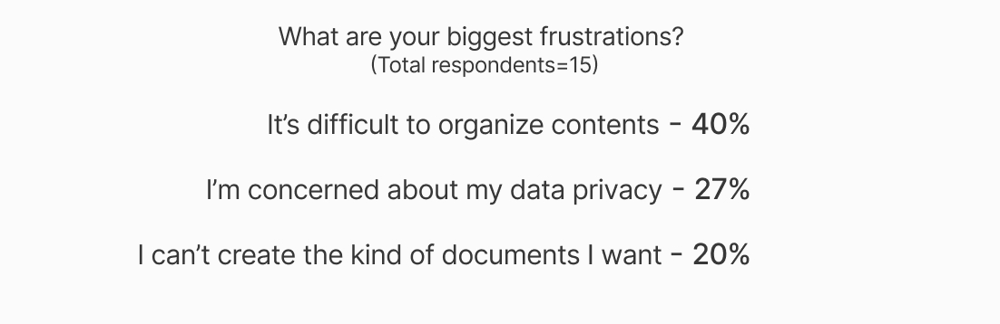
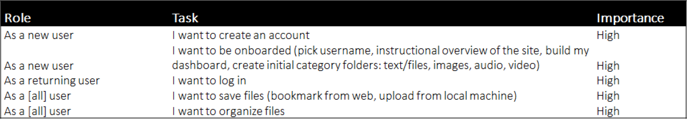
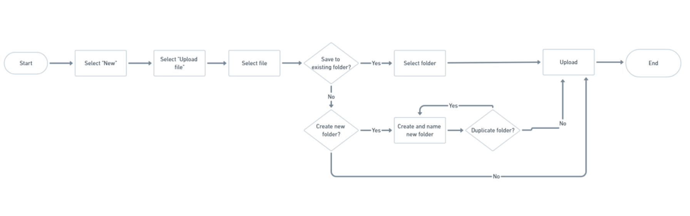
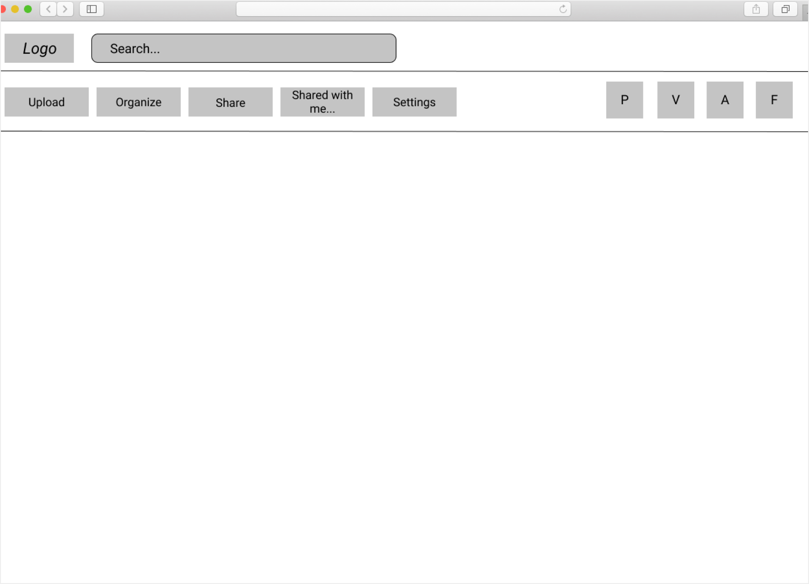
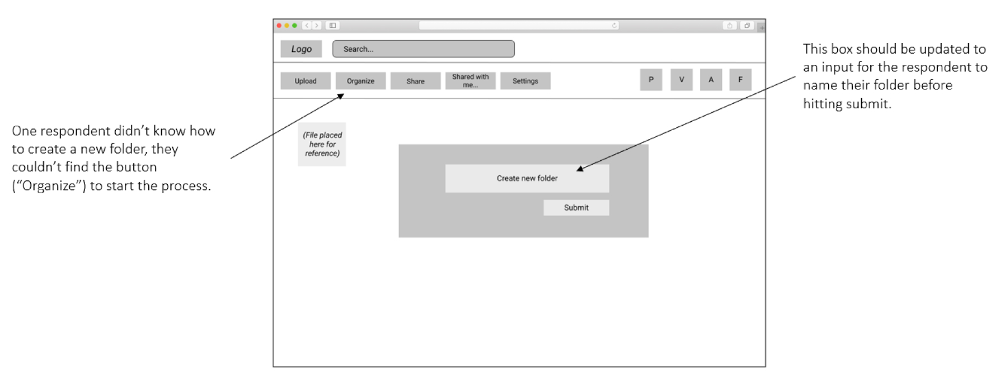
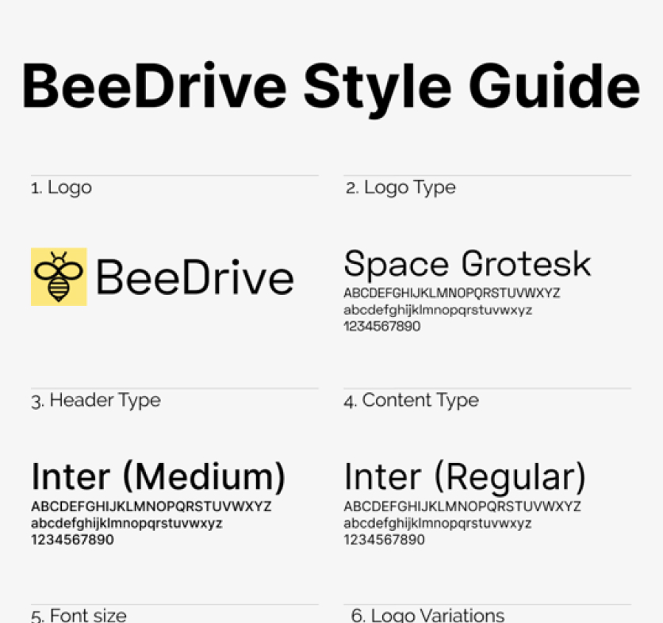
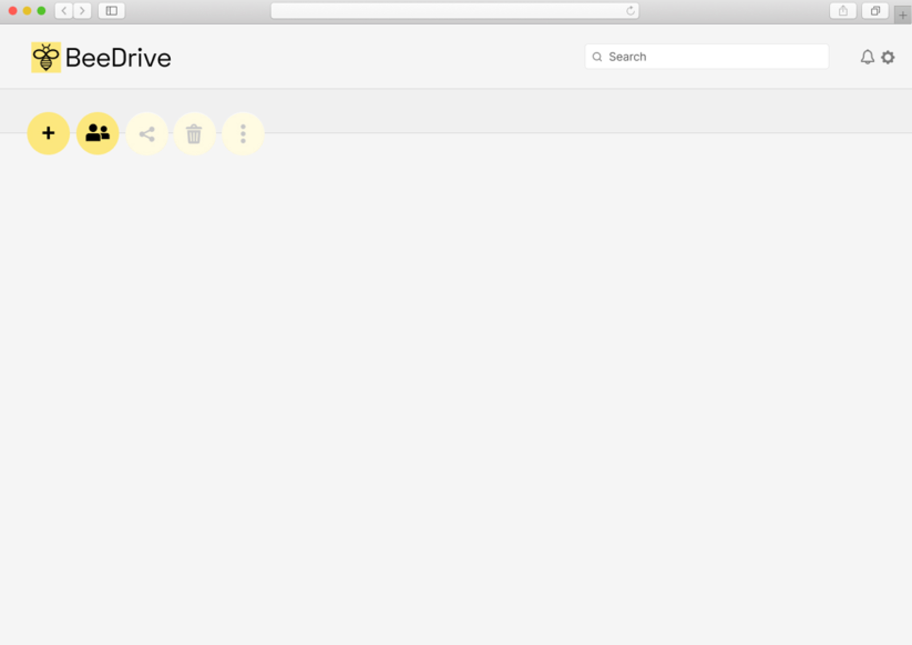

Responsibilities
UX Design, UI Design, Brand Identity
Tools
Figma, InVision
Problem
Through research, I discovered a problem within the market that I could solve for: Almost half of cloud storage users find it difficult to organize content.
Solution
The solution is BeeDrive, a cloud storage product that emphasizes simplicity. Users can upload, save, organize, share and collaborate in a more intuitive way on a simplified interface.
Competitive Analysis
First I conducted a SWOT analysis of key competitors which revealed opportunities. Competitors are focused on appealing to a vast audience (Google Drive, DropBox) or are singularly focused (Pinterest), allowing space for another cloud storage product that can cater to a smaller, niche audience.
Link to reportUser Surveys
Next, I wanted to get a better understanding of current cloud storage users to better understand their current behaviors and to identify any pain points/needs. A key finding is that almost half of cloud storage users find it difficult or organize content.
 Link to reportUser Personas
Using my research, I created personas to represent different potential users. These helped me determine critical features that this product should have. Knowing that organization is a current point of frustration among cloud users, I wanted to keep my focus there.
Link to reportUser Stories
With the personas in mind, I created user stories of key features that this new product should have. I was sure to prioritize features related to organization. Ranking features in order of importance was helpful in order to determine which features should take priority.
 Link to User StoriesUser Flows
With features prioritized in the User Stories, I created User Flows to outline the process of key features. The User Flows provided a blueprint for the product design.
 Link to User FlowsLo-Fi Prototyping
Using the User Flows for guidance, I created lo-fi wireframes of the product. From there I created a lo-fi clickable prototype. I wanted to keep the focus on simplicity and ease of use, especially when it comes to features related to organization. As you can see, there is a dedicated “Organize” button and the interface has lots of space to draw the eye to key features.
 Link to full workUser Testing – Round 1
I tested the clickable lo-fi prototype with three in-person respondents. I tasked them with signing up, saving a file and creating a new folder. I received excellent feedback and identified ways to make the overall design more clear and how to improve key functions.
 Link to full workBrand Identity
I named the product BeeDrive and gave it a bee themed logo. I choose a bee mascot since bees are symbols of hard work and organization - research data revealed that these are qualities embodied/valued by the target audience (busy students). The brand story was outlined in a style guide. I wanted branding that would convey the minimalism, simplicity and ease of use of the product. As such I prioritized simple geometric shapes and modern/clean sans-serif fonts.
 Link to full workHi-Fi Prototyping
Using the Style Guide, I created a hi-fi clickable prototype for users to click through the most important tasks outlined in the User Stories.
 Link to prototype
Link to prototype
User Testing - Round 2
The second round of testing using the hi-fi prototypes helped me test updates that I put in place after the first round of testing. Some updates proved successful, such as making the upload “New Folder” function more clear and reducing the amount of buttons on screen.In the previous round of testing using the lo-fi prototypes, a user wasn’t able to find the button to upload a new folder (“Organize”) so I made this process more clear by reducing the number of buttons and relabeling them.
Finished Product
With the second round of testing complete using the hi-fi prototypes, I was able to identify more areas for improvement, the most prominent being an update to the landing page as well as removing confusing buttons and adding new ones that I realized were important to the user.
 Link to prototypeConclusions
I had fun carrying out this project, the journey of starting with an idea and developing it into a prototype was exciting and rewarding. Fun as it was, I also learned lessons and found opportunities to improve moving forward:
- Overall, I feel like this product could have been even more differentiated from other Cloud Storage products. Looking back, I should have spent more time on the competitive analysis. I feel that I should have spent more time to really understand and identify opportunities to really stand out from the competition.
- I would’ve then liked to have spent even more time conducting user research to better understand current needs and pain points of current cloud storage users.
- A second round of user surveys would’ve been useful to help gauge interest in potential product features.
- A larger sample would have helped to provide more robust data.
- In the future, I will look for even more opportunities to test the product through each design stage, especially for prototype tests.
- I also want to push myself to develop and further refine my eye for the design of user interfaces.
Overall, I’m happy that I took a data driven approach to this design process. For each step, I relied on available data to guide my decision making. I wanted to be sure I was guarding against my biases, keeping the core objectives in focus and keeping the end user in mind.